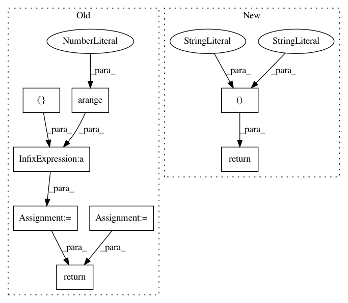

8c430e84863f1a1f7492206ea399215b75a7c4cd,lib/matplotlib/projections/polar.py,PolarAxes,get_yaxis_text1_transform,#PolarAxes#Any#,657
Before Change
valign = [["top", "bottom", "bottom", "top"],
// ["bottom", "bottom", "top", "top"]]
["bottom", "bottom", "bottom", "bottom"]]
halign = [["left", "left", "right", "right"],
// ["left", "right", "right", "left"]]
["left", "left", "left", "left"]]
ind = np.digitize([angle], np.arange(0, 361, 90))[0] - 1
return self._yaxis_text_transform, valign[full][ind], halign[full][ind]
def get_yaxis_text2_transform(self, pad):
thetamin, thetamax = self._realViewLim.intervalx
full = _is_full_circle_rad(thetamin, thetamax)
After Change
if self.get_theta_direction() > 0 or full:
return self._yaxis_text_transform, "center", "left"
else:
return self._yaxis_text_transform, "center", "right"
def get_yaxis_text2_transform(self, pad):
if self.get_theta_direction() > 0:
return self._yaxis_text_transform, "center", "right"
In pattern: SUPERPATTERN
Frequency: 3
Non-data size: 8
Instances
Project Name: matplotlib/matplotlib
Commit Name: 8c430e84863f1a1f7492206ea399215b75a7c4cd
Time: 2017-09-25
Author: quantum.analyst@gmail.com
File Name: lib/matplotlib/projections/polar.py
Class Name: PolarAxes
Method Name: get_yaxis_text1_transform
Project Name: nipy/dipy
Commit Name: 76c4b61e475292df6c780cbb71fa63aa05f6b0ab
Time: 2013-08-15
Author: arokem@gmail.com
File Name: dipy/reconst/dti.py
Class Name:
Method Name: apparent_diffusion_coef
Project Name: matplotlib/matplotlib
Commit Name: 6889c6dbf8511382250bea9a5a36ceb0e1912f01
Time: 2017-09-25
Author: tcaswell@gmail.com
File Name: lib/matplotlib/projections/polar.py
Class Name: PolarAxes
Method Name: get_yaxis_text1_transform